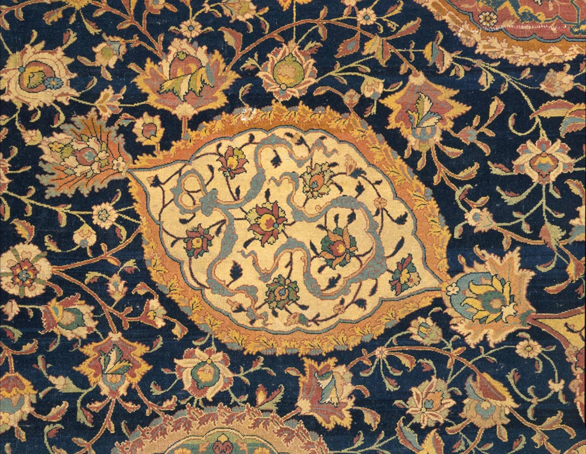

The Heavenly Garden
Safavid Dynasty · 1501–1722In the early 16th century, a transformation occurred that would forever change the history of Persian rugs. The newly established Safavid court elevated weaving from a craft to a high art form, establishing royal workshops where court artists directed every detail of production.
Artists created intricate blueprints known as cartoons — elaborate drawings of floral arabesques, medallions, and paradise gardens. These were handed to master weavers who translated each line into thousands of hand-tied knots, achieving densities of up to 500 knots per square inch.
Each carpet was a woven cosmology: a garden that could be unrolled anywhere.
These rugs became more than functional objects. They were visual representations of paradise — the Persian word for garden, pairi-daeza, is the origin of our own word. Each carpet was a woven cosmology: a garden that could be unrolled anywhere, a portable heaven made of wool and silk.

The Ardabil Carpet (1539) remains one of the most revered works in textile history. Commissioned for a royal shrine, it contains over 33 million individual knots. Its central medallion is thought to represent the sun radiating across a celestial dome — an image of cosmic order rendered in wool and silk.
It now resides in the Victoria & Albert Museum in London, where it occupies its own gallery, displayed under carefully controlled light as if it were a painting. It is not simply a carpet. It is a threshold between the mortal world and an imagined paradise.